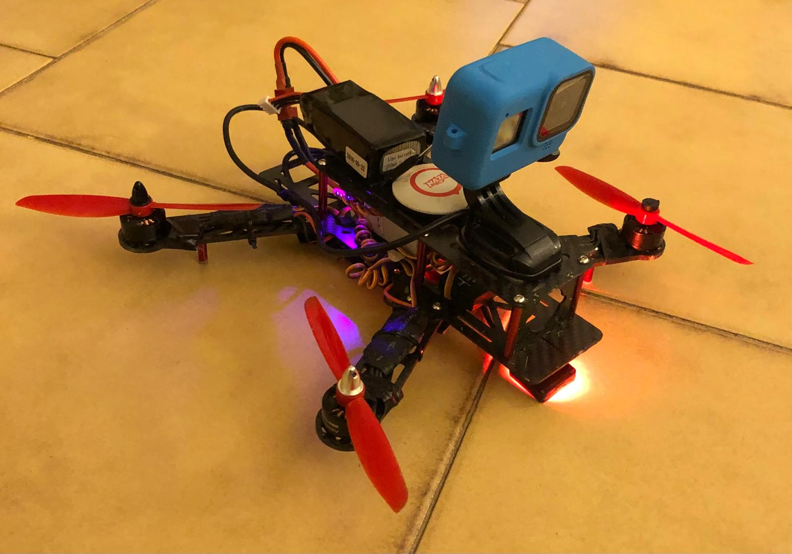
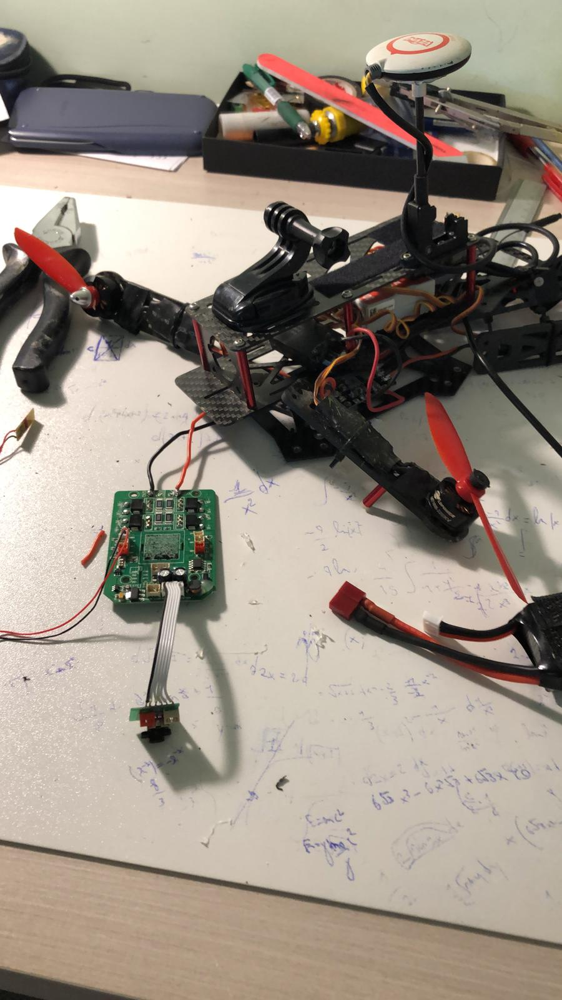
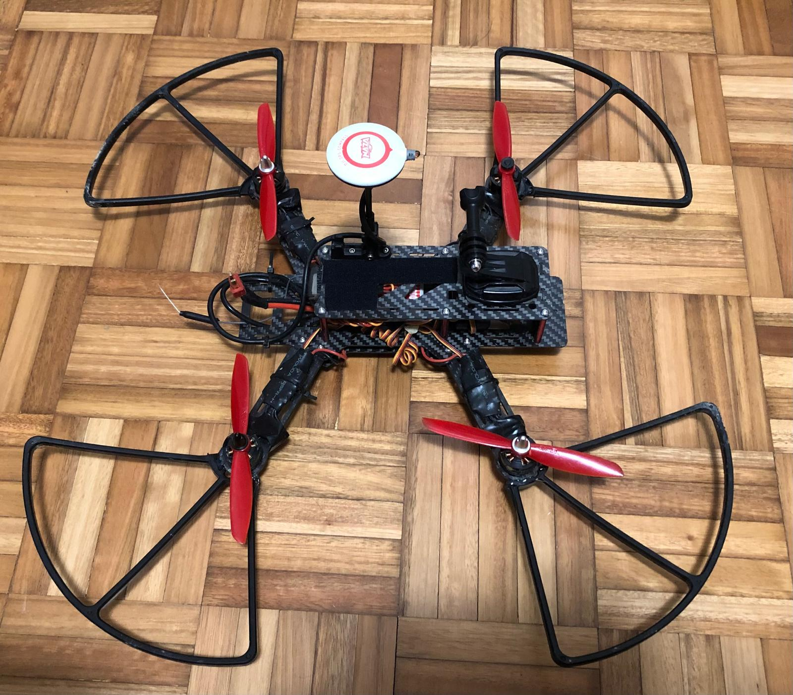
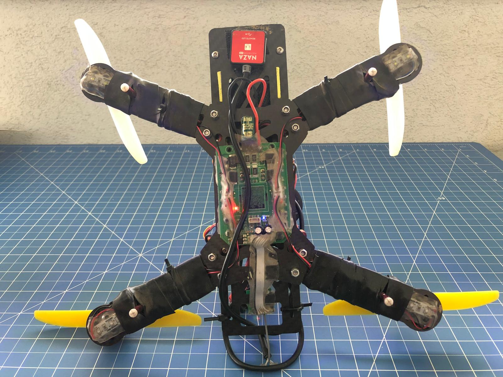
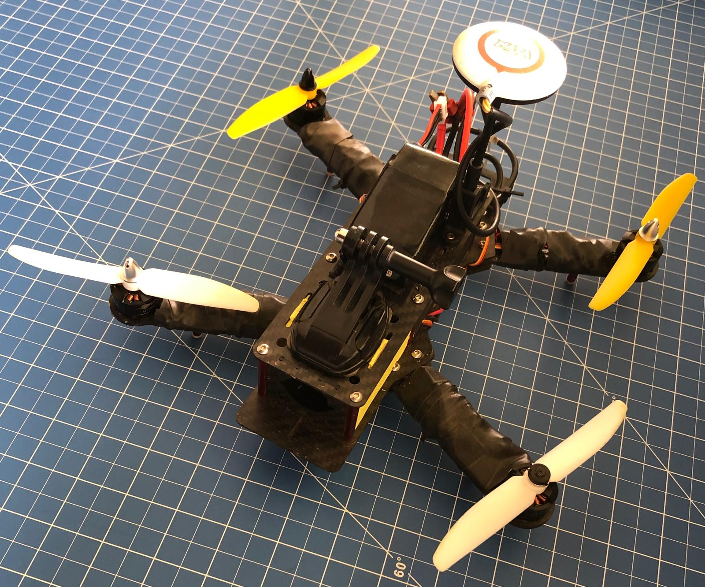
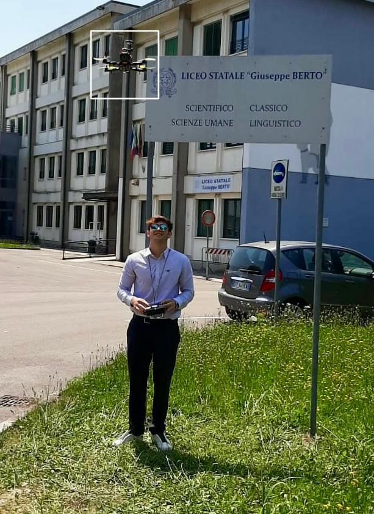
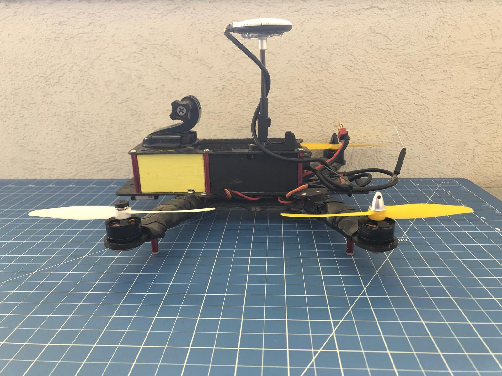
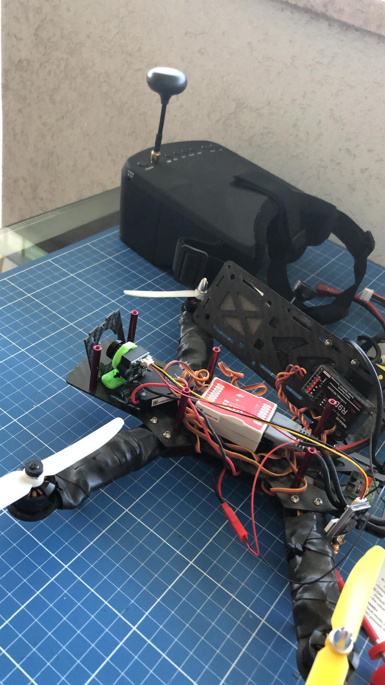

High School Project · 2019–2020 · Where it all started
What started as a lockdown experiment turned into a full engineering project - and the reason I chose aerospace.
The origin
It started during the COVID lockdown. I was 18, stuck at home, and looking for something to do with my hands. I'd always been curious about how things fly - not just the theory, but the actual mechanics of it.
I walked into a local hobby shop with a vague idea and walked out with a carbon fiber frame, four brushless motors, ESCs, a flight controller, and a LiPo battery - most of it second-hand parts the staff pulled from their own stash. No kit, no step-by-step guide. Just components, a soldering iron, and a lot of YouTube videos.
The first time it lifted off the ground - wobbly, barely controllable - I knew I was on the right path.

Early assembly stage — flight controller not yet mounted
The build



The frame is made of carbon fiber — lightweight and rigid, the same material used in aircraft structures. Four brushless outrunner motors drive the propellers, controlled individually by ESCs (Electronic Speed Controllers) that regulate RPM in real time.
The brain of the drone is a Naza flight controller — an IMU-based autopilot that reads gyroscopes, accelerometers, barometers, and GPS to keep the drone stable in the air, even in wind.
Later I added a custom LED lighting circuit for night flights and orientation — something I designed and soldered myself.
Frame
Carbon fiber quadcopter
Motors
Brushless outrunner × 4
Flight controller
DJI Naza + GPS
Battery
LiPo 3S
Graduation day
For my Esame di Maturità - the Italian high school final exam - I presented the drone as my main project. The technical part covered brushless motor theory, flight controller principles, and the electromagnetic physics behind how a motor converts current into rotation.
The presentation included a live demonstration: I flew the drone outside the school building right after the exam. That photo - me with the controller, drone hovering in front of the Liceo Berto sign - is one I'll keep forever.

Outside Liceo Statale G. Berto - graduation day, June 2020
What came next
Version 1 - 2019
Base configuration
Basic quadcopter with GPS hold and altitude control. Carbon frame, Naza FC, red propellers. First flights were shaky.
Version 2 - 2020
LED circuit + camera mount
Added a custom LED lighting system soldered onto the frame for night flights and visual orientation. Mounted a GoPro for aerial footage.
Version 3 — 2020
FPV conversion
The most exciting upgrade: a new lighter frame, FPV camera transmitting live video, and a pair of FPV goggles. Flying from a first-person perspective completely changes the experience - you're not watching the drone, you are the drone.


Left: intermediate build with yellow propellers - Right: FPV setup with video goggles